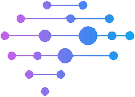

Projects
Project 1
Display:
1
2
3
Aceleron - A Neural Network Framework

Aceleron is a beautifully simple neural network framework that covers the core mechanics of traditional neural networks and it's approach from a high performance computing perspective.
- C++ and Python versions
- Parralellized with CUDA
- Detailed performance analysis
- Intelligent use of OOP design
- Rewrote core numpy functions in C++
Code here.